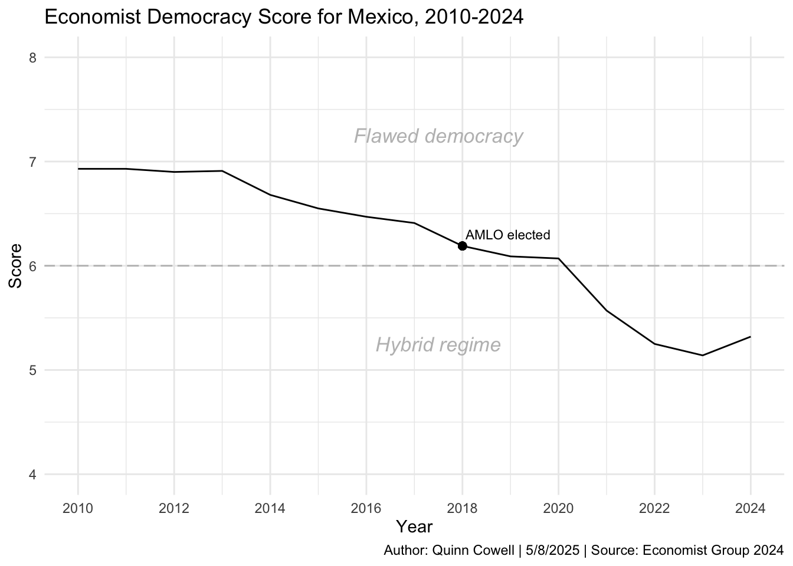
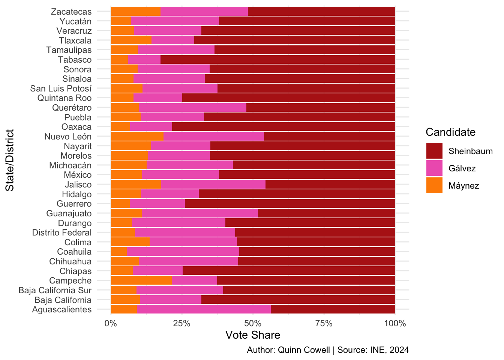
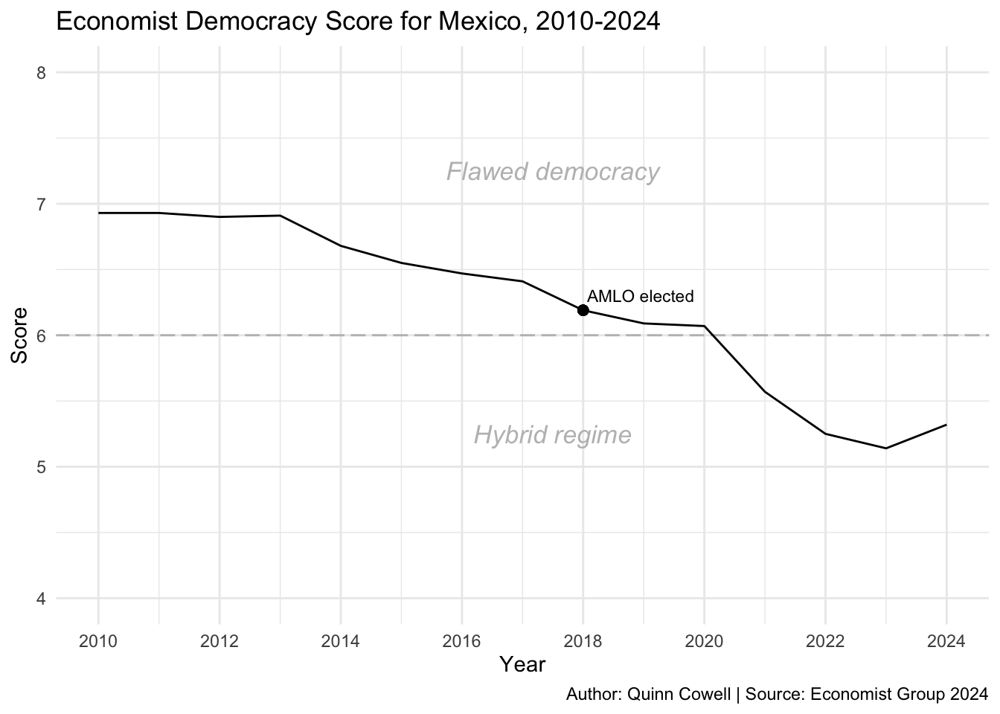
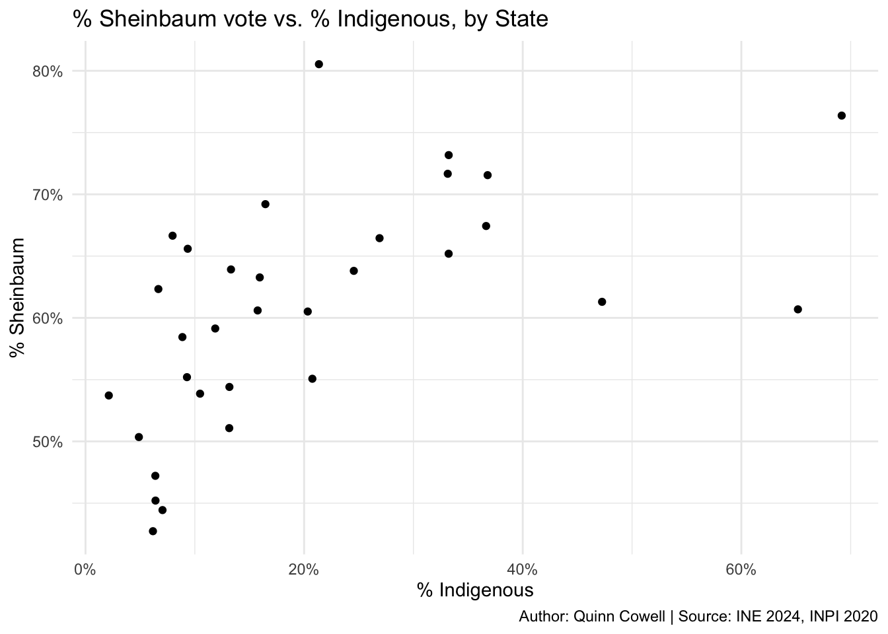
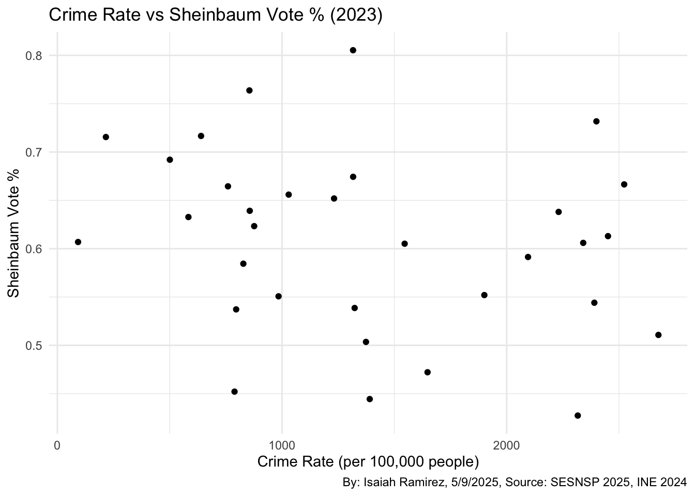
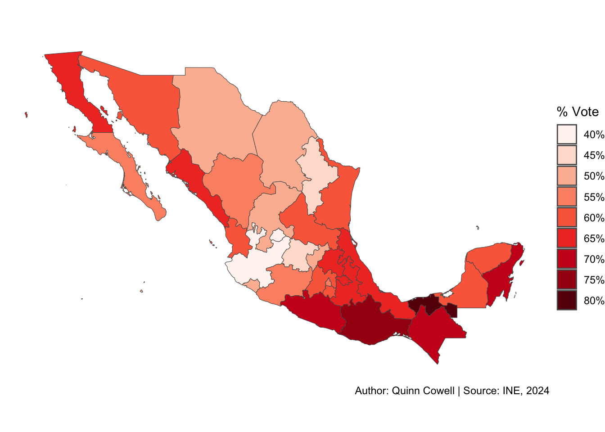
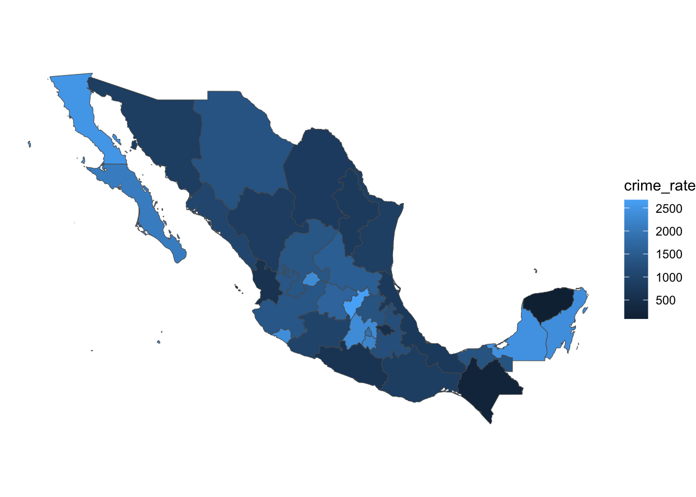

An Analysis of the 2024 Mexican Presidential Election
Authors
Quinn Cowell
Isaiah Ramirez
Published
Monday, May 12, 2025
Claudia Sheinbaum Pardo
Introduction
In this project, we will be examining the 2024 Mexican presidential election, won in a landslide by Claudia Sheinbaum Pardo, Mexico’s first female and first Jewish head of state. Sheinbaum, the “anointed successor” to outgoing president Andrés Manuel López Obrador, did win with a majority in almost every state, but we still wanted to know: what factors influenced Claudia Sheinbaum’s overwhelming victory in the 2024 election, and why did she do better in some states than in other states?
This topic interested us because neither of us knew much about Mexican politics even though Mexico is an important, powerful neighbor directly to the south of the US (especially relevant since one of us is from Texas), so we decided to use this extremely consequential election to learn more.
Background information
A brief history of Mexican politics
Andrés Manuel López Obrador
From the time of the Mexican Revolution in 1929, overthrowing dictator Porfirio Díaz, to the year 2000, Mexico was effectively a one-party state ruled by the Institutional Revolutionary Party (PRI) through political violence, repression, and election rigging. Reforms in the 1990s allowed other parties a fair chance at power, and in 2000 the first non-PRI president in 71 years was elected from the conservative National Action Party (PAN). However, most Mexicans did not benefit much from this new democratic system, with decades of neoliberal policies leaving many Mexicans deeply impoverished. In addition to this poverty, in 2007 President Felipe Calderón of the PAN decided to declare Mexico’s “war on drugs” against cartels, taking a more militant approach to combating the illegal drug trade. However, this policy ended up causing an explosion in gang violence that continues to permeate Mexico today. Mexicans’ deep dissatisfaction with the status quo, mainly defined by the PRI and the PAN, led to the election in 2018 of Sheinbaum’s like-minded predecessor, Andrés Manuel López Obrador, or AMLO for short, founder of the National Regeneration Movement (MORENA). MORENA is considered a left-wing, populist party, and AMLO won his election handily, becoming one of the most popular global leaders with a high of 81% approval and never dropping below 60%. AMLO is best known for instituting a variety of social programs intended to help the poor, including raising the minimum wage, kickstarting public works projects, and reforming labor laws, as well as signing new protections for indigenous Mexicans and Afro-Mexicans. Criticisms of AMLO included his less-harsh policies towards cartels and heightened dependence on the military, as well as general democratic backsliding, as shown by the slide from “flawed democracy” to “hybrid regime” in the graph below, mainly in relation to judicial reforms. However, this did not tarnish AMLO’s immense popularity, meaning that the 2024 election was as much a referendum on his presidency, represented by Sheinbaum and MORENA, as it was an actual election.

Politics and elections
Mexico is a federal republic, with 31 states and a federal district (herein referred to as a 32nd state). The president is elected by national popular vote to a single six-year term, after which they are term limited. There were seven political parties that took part in the 2024 election: the PAN (conservative) and PRI (center), previously mentioned; the Party of the Democratic Revolution (PRD), a social-democratic party; MORENA, previously mentioned; the Labor Party (PT), a socialist party; and the Green Ecologist Party of Mexico (PVEM). The seventh party, Citizens’ Movement (MC), a center-left party, only had a minor candidate in the 2024 elections.
Parties can choose to cluster into coalitions in the legislature and the presidential election, jointly running a candidate; voters can choose to vote for an individual party or for all or parts of a coalition. In 2024, two main coalition candidates ran: Sheinbaum, of the MORENA party, in a left-wing coalition with the PT and the PVEM; and Bertha Xóchitl Gálvez Ruiz, of the PAN, running in a big-tent coalition with the PRI and the PRD.
Coalitions in the 2024 election
Sigamos Haciendo Historia
Fuerza y Corazón por México
Let’s Keep Making History
Strength and Heart for Mexico
Claudia Sheinbaum Pardo
Bertha Xóchitl Gálvez Ruiz
There was also an individual MC candidate, Jorge Álvarez Máynez, although he was considered a long shot.
Some of the main election issues, which we will be looking at more below, include the continuation of social programs started under AMLO (to be continued under Sheinbaum) and ongoing violence related to Calderón’s drug war that AMLO had not been able to reign in, a frequent criticism from MORENA’s opponents. Additionally, MORENA (and AMLO himself, as a former indigenous rights activist) promoted the rights of indigenous communities and Afro-Mexicans, a potential contributor to MORENA’s popularity
Data and analysis
Data collection
The data we used for this project was mainly collected by agencies of the Mexican governemnt, particularly from the National Institute of Statistics and Geography (INEGI), whcih conducts the Mexican census, and is where most of our statistical data came from. The other main agency consulted was the National Electoral Institute (INE), where we got our elections data. Crime data came from the Executive Secretariat of the National Public Safety System (SESNSP), and data on indigeneity came from the National Institute of Indigenous Peoples (INPI), via the census. All data was survey data collected for information purposes by the government. The data was acquired through a) the DataMéxico Vizbuilder or b) the respective agency’s open data page. The datasets varied from 32 rows (the number of Mexican states) and two columns, to over 100,000 columns and over 30 rows, which we pared down. Datasets were measured by state/“federal entity” in most cases, or by individual voting booth in the case of the electoral data.
Most of the datasets had to be cleaned significantly, at the very least being translated from Spanish to English; most others had extraneous columns that could be removed, or columns that had to be mutated to form a more helpful measurement (for example, having to find percentages rather than raw data).
Analysis
Here we have included graph(s) to show general election info showing support distribution of voters. We wanted to get a sense of how voters were distributed amongst their chosen canidates. Clearly we cna most certainly emphasize Sheinbaum’s overall dominance in this election.

Continuing into this section of our report, through our research we went through some different sources and there were a couple of issues that continued to pop up in our research of this election. Them being the economy/wages of labor, crime, and indigenous issues. We want to explore these issues to see if there may be any correlation between these issues and Sheinbaum voter percentage. To start we wanted to take a look at percent population of indigenous people in the states of Mexico, which as you can tell that further in the south of Mexico is where a majority of the indigenous population is. We will keep this in mind as we explore further into the next graph.

Here in this graph we can see that the higher the population of indigenous people are in a state the more likely they are to vote majority for Sheinbaum. Even then as we look closer at the graph we can still see that the points overall vote mostly Sheinbaum, specifically over 50% of that state still vote for Sheinbaum. Reinstating the clear fact that Sheinbaum dominated in this election.

Now looking at our crime graphs, through a little math we took a a states total violent crime divided it by its total population back in 2023 and multiplied by 100,000. In this case the solution to this would tell us on average how many violent crimes happen for every 100,000 people. Looking at this graph we can see that average is again at its highest towards the south of Mexico other than the standout state in the north Baja California. Again, we shall keep this in mind looking at the next graph and others still to come.
Now looking at this graph we can may be see a slight decline of Sheinbaum voters as crime rate increases, but still we can see that majority of these points are still well over the 50% mark for Sheinbaum supporters.No matter the variety of crime rate in each state. Makes it easy to tell that Sheinbaum is well supported by states no matter the crime rate.

Finally, looking at average income for states. We really wanted to look at states where maybe they and a higher or lower average income to see if there is a relation between income and Sheinbaum voter percentage. Here we see down in the south is where the more poorer community seems to be. Here we can form the idea that the south of Mexico in general seems to be where life is maybe a little harder. Again remember this for reference.
In this graph we can definitely see the continuation of crime where the higher the income, the less support Sheinbaum gets. However we can still see that it is that way, most of the states points are well over the 50% support of Sheinbaum. Even with the decline of her support as income increases.
Now as we sort of tie things together, here we have included maps of each state’s voting percentage for Sheinbaum and Galvez. Something to note here is the amount of support Sheinbaum got from states int he south. Which I think reflects what Sheinbaum’s political party is all about. Even then, her overall voter percentage is pretty high amongst all the states. And looking back at the income map we can see where the higher income areas are, mostly in the north of Mexico where most of Galvez’s support mostly was Even if she still didn’t take the majority vote in a state. We can see that overall there is a definite pattern of the Sheinbaum team being overall well supported by voters all across the board.


While there was another candidate in the election—Álvarez Máynez—we chose not to focus on his campaign due to limited voter support. For the purposes of our analysis, the data and trends surrounding Galvez and Sheinbaum offered the most meaningful insights into the overall outcome of the election.
Conclusion
While Sheinbaum’s overwhelming victory does imply somewhat of a national sentiment regardless of identity, it is nonetheless interesting to see which platforms seemed to work -– and which didn’t. While indigeneity and income seemed to be relatively solid indicators of a higher Sheinbaum vote share, violent crime rates did not seem to be impactful at all, surprising given that this was one of the opposition’s main criticisms.
More specific data and more angles would be improvements to make for future research; rather than using violent crime as a metric for gang violence, for example, is there a dataset that records gang activity? It would also be interesting to look more in depth into AMLO’s time in office in order to choose more variables to evaluate.
Source Code
---title: "An Overview of the 2024 Mexican Presidential Election."execute: echo: false # change to true to show the code warning: falsecode-fold: true # change to true to fold the code chunksformat: htmlnumber-sections: false---<div>```{=html}<iframe width="560" height="315" src="https://www.youtube.com/embed/2IKlbM_liaA?si=FSXKly0uFoDfQDhj" title="YouTube video player" frameborder="0" allow="accelerometer; autoplay; clipboard-write; encrypted-media; gyroscope; picture-in-picture; web-share" referrerpolicy="strict-origin-when-cross-origin" allowfullscreen></iframe>```</div><div>```{=html}<iframe width="560" height="315" class="slide-deck" src="https://docs.google.com/presentation/d/1Hs2c5ZkeOEpIBOt6nOFCRE7ccwG0nqateBcx078XTts/edit?usp=sharing"></iframe>```</div>```{r}# putting all the data shit in one chunk so we can collapse it more easily later# load presidential election datalibrary(tidyverse)library(stringi)library(rnaturalearth)library(RColorBrewer)presidencial <-read_delim("data/presidential/PRES_2024.csv", delim ="|", skip =6, locale =locale(encoding ="latin1"))presidential <- presidencial |>rename(casilla_code = CLAVE_CASILLA,acta_code = CLAVE_ACTA,ID_entity = ID_ENTIDAD,entity_state = ENTIDAD,ID_federal_district = ID_DISTRITO_FEDERAL,federal_district = DISTRITO_FEDERAL,section = SECCION,casilla_id = ID_CASILLA,casilla_type = TIPO_CASILLA,ext_contigua = EXT_CONTIGUA,casilla = CASILLA,acta_type = TIPO_ACTA,independent =`CANDIDATO/A NO REGISTRADO/A`,null_votes =`VOTOS NULOS`,total_votes = TOTAL_VOTOS_CALCULADOS,eligible_voters = LISTA_NOMINAL,observations = OBSERVACIONES,transfer_mechanism = MECANISMOS_TRASLADO,date_time = FECHA_HORA ) |>filter(total_votes !=0) |>mutate_at(vars(13:31), as.numeric) |>mutate(sheinbaum = PT + MORENA + PVEM_PT_MORENA + PVEM_PT + PVEM_MORENA + PT_MORENA + PVEM) |>mutate(galvez = PAN + PAN_PRI_PRD + PAN_PRI + PAN_PRD + PRI + PRI_PRD + PRD) |>mutate(maynez = MC)# clean it again because i realized i wasn't htorough enough the first time but i used the original dataset in my edapresidential_clean <- presidential |>mutate(casilla =fct_recode(casilla, "Non-urban"="No Urbana", "Urban"="Urbana")) |>mutate(entity_state =str_to_title(entity_state)) |>mutate(entity_state =str_replace(entity_state, "Ciudad De México", "Distrito Federal")) |>select(casilla_code, acta_code, ID_entity, entity_state, casilla_type, casilla, independent, null_votes, total_votes, eligible_voters, sheinbaum, galvez, maynez) |>rename(id_state = ID_entity,state = entity_state )# IGNORE THE ONE CALLED `presidential_clean.csv`!!!!!!!# presidential election percentages datasetpres_percents <- presidential |>group_by(entity_state) |>summarise(tot_sheinbaum =sum(sheinbaum), tot_galvez =sum(galvez), tot_maynez =sum(maynez), total_votes =sum(total_votes)) |>mutate(pct_sheinbaum = tot_sheinbaum/total_votes, pct_galvez = tot_galvez/total_votes, pct_maynez = tot_maynez/total_votes) |>mutate(entity_state =str_to_title(entity_state)) |>mutate(entity_state =str_replace(entity_state, "Ciudad De México", "Distrito Federal")) |>select(-starts_with("tot")) |>mutate(pct_sheinbaum_cats =cut(pct_sheinbaum,breaks =seq(.4, .85, by = .05),labels =c("40%", "45%", "50%", "55%", "60%", "65%", "70%", "75%", "80%"),include.lowest =TRUE ), pct_galvez_cats =cut(pct_galvez,breaks =seq(.1, .5, by = .05),labels =c("10%", "15%", "20%", "25%", "30%", "35%", "40%", "45%"),include.lowest =TRUE ),pct_maynez_cats =cut(pct_maynez,breaks =seq(.05, .25, by = .03),labels =c("5%", "8%", "11%", "14%", "17%", "20%"),include.lowest =TRUE ))# now we're going to upload and clean some statistical data from Mexico# population by statepopulation_messy <-read_csv("data/originals/population_state_1020.csv")population_20 <- population_messy |>filter(Year ==2020) |>mutate(State =str_replace(State, "Ciudad de México", "Distrito Federal"),State =str_replace(State, " de Zaragoza", ""),State =str_replace(State, "Estado de ", ""),State =str_replace(State, " de Ocampo", ""),State =str_replace(State, " de Ignacio de la Llave", "")) |>rename(state = State,year = Year,id_state =`State ID`,pop = Population )# quarterly income by state and year (MXP)income_messy <-read_csv("data/originals/income_state_1622.csv")income_16_22 <- income_messy |># keeping year-by-year data as possible analysis toolmutate(State =str_replace(State, "Ciudad de México", "Distrito Federal"),State =str_replace(State, " de Zaragoza", ""),State =str_replace(State, "Estado de ", ""),State =str_replace(State, " de Ocampo", ""),State =str_replace(State, " de Ignacio de la Llave", "")) |>rename(state = State,year = Year,id_state =`State ID`,income_quarterly_mxp =`Quarterly Income` )# violent crime by state (data in Spanish)crimes_messy <-read_csv("data/originals/crimes_state_1524.csv")violent_crimes_18_23 <- crimes_messy|># we only want crime data from 2023 as it was before the election, possible avg after 2018mutate(State =str_replace(State, "Ciudad de México", "Distrito Federal"),State =str_replace(State, " de Zaragoza", ""),State =str_replace(State, "Estado de ", ""),State =str_replace(State, " de Ocampo", ""),State =str_replace(State, " de Ignacio de la Llave", "")) |>filter(Year %in%c(2019, 2020, 2021, 2022, 2023)) |>#removing data pre-AMLO + election years# we will be using the FBI's definition of violent crime to filter the listfilter(`Crime Type`%in%c("Robo", "Violación Equiparada", "Violación Simple", "Homicidio", "Lesiones", "Otros Delitos que Atentan contra la Vida y la Integridad Corporal")) |>group_by(State, Year, `State ID`) |>summarise(tot_viol_crime =sum(Value)) |>rename(state = State,year = Year,id_state =`State ID` )# indigenous mexicans (by state, those who speak an indigenous language)# ¡UNZIP mx_census_2020.csv ZIP FILE TO RUN!# census_messy <- read_csv("data/originals/mx_census_2020.csv")# census_messy |># filter(NOM_LOC == "Total de la Entidad") |> # census totals by state# mutate(# NOM_ENT = str_replace(NOM_ENT, "Ciudad de México", "Distrito Federal"),# NOM_ENT = str_replace(NOM_ENT, " de Zaragoza", ""),# NOM_ENT = str_replace(NOM_ENT, " de Ocampo", ""),# NOM_ENT = str_replace(NOM_ENT, " de Ignacio de la Llave", "")) |># select(1:2, 10, 124:139) |># select(-contains("AFRO"), -ends_with("_M"), -ends_with("_F")) |># rename(# id_state = ENTIDAD,# state = NOM_ENT,# tot_pop = POBTOT,# indigenous_hh = PHOG_IND# ) |># mutate_at(vars(4:10), as.numeric) |># mutate(pct_indigenous = (indigenous_hh/tot_pop)*100)# import second indigenous dataset idfk (those who self-identify as indigenous)library(readxl)indigenous_messy <-read_excel("data/originals/1-poblacion-indigena-autoadscrita-nacional-y-por-entidad-federativa-muestra-censal-2020.xlsx", skip =3)indigenous_pop_24 <- indigenous_messy |>filter(!is.na(Entidad)) |>filter(Entidad !="Estados Unidos Mexicanos") |>mutate(Entidad =str_replace(Entidad, "Ciudad de México", "Distrito Federal"),Entidad =str_replace(Entidad, " de Zaragoza", ""),Entidad =str_replace(Entidad, " de Ocampo", ""),Entidad =str_replace(Entidad, " de Ignacio de la Llave", "")) |>filter(Estimador =="Estimación") |>select(`Clave de la entidad`, Entidad, Tipo, `Se considera indígena`) |>pivot_wider(names_from = Tipo, values_from =`Se considera indígena`) |>rename(id_state =`Clave de la entidad`,state = Entidad,pop_ind = Población,pct_ind = Porcentaje )# democracy index economistmx_dem_index <-tribble(~year, ~ranking, ~regime_type,2010, 6.93, "Flawed democracy",2011, 6.93, "Flawed democracy",2012, 6.90, "Flawed democracy",2013, 6.91, "Flawed democracy",2014, 6.68, "Flawed democracy",2015, 6.55, "Flawed democracy",2016, 6.47, "Flawed democracy",2017, 6.41, "Flawed democracy",2018, 6.19, "Flawed democracy",2019, 6.09, "Flawed democracy",2020, 6.07, "Flawed democracy",2021, 5.57, "Hybrid regime",2022, 5.25, "Hybrid regime",2023, 5.14, "Hybrid regime",2024, 5.32, "Hybrid regime")#mexico mapmexico <-ne_states(country ="Mexico")```::: {style="float: right; margin: 5px;"}{width="168"}:::## IntroductionIn this project, we will be examining the 2024 Mexican presidential election, won in a landslide by Claudia Sheinbaum Pardo, Mexico's first female and first Jewish head of state.Sheinbaum, the "anointed successor" to outgoing president Andrés Manuel López Obrador, did win with a majority in almost every state, but we still wanted to know: what factors influenced Claudia Sheinbaum's overwhelming victory in the 2024 election, and why did she do better in some states than in other states?This topic interested us because neither of us knew much about Mexican politics even though Mexico is an important, powerful neighbor directly to the south of the US (especially relevant since one of us is from Texas), so we decided to use this extremely consequential election to learn more.## Background information### A brief history of Mexican politics::: {style="float: left; margin: 5px;"}{width="202"}:::From the time of the Mexican Revolution in 1929, overthrowing dictator Porfirio Díaz, to the year 2000, Mexico was effectively a one-party state ruled by the Institutional Revolutionary Party (PRI) through political violence, repression, and election rigging.Reforms in the 1990s allowed other parties a fair chance at power, and in 2000 the first non-PRI president in 71 years was elected from the conservative National Action Party (PAN).However, most Mexicans did not benefit much from this new democratic system, with decades of neoliberal policies leaving many Mexicans deeply impoverished.In addition to this poverty, in 2007 President Felipe Calderón of the PAN decided to declare Mexico's "war on drugs" against cartels, taking a more militant approach to combating the illegal drug trade.However, this policy ended up causing an explosion in gang violence that continues to permeate Mexico today.Mexicans' deep dissatisfaction with the status quo, mainly defined by the PRI and the PAN, led to the election in 2018 of Sheinbaum's like-minded predecessor, Andrés Manuel López Obrador, or AMLO for short, founder of the National Regeneration Movement (MORENA).MORENA is considered a left-wing, populist party, and AMLO won his election handily, becoming one of the most popular global leaders with a high of 81% approval and never dropping below 60%.AMLO is best known for instituting a variety of social programs intended to help the poor, including raising the minimum wage, kickstarting public works projects, and reforming labor laws, as well as signing new protections for indigenous Mexicans and Afro-Mexicans.Criticisms of AMLO included his less-harsh policies towards cartels and heightened dependence on the military, as well as general democratic backsliding, as shown by the slide from "flawed democracy" to "hybrid regime" in the graph below, mainly in relation to judicial reforms.However, this did not tarnish AMLO's immense popularity, meaning that the 2024 election was as much a referendum on his presidency, represented by Sheinbaum and MORENA, as it was an actual election.```{r}# democracy mx_dem_index |>ggplot(aes(x = year, y = ranking)) +geom_abline(slope =0, intercept =6.0, color ="grey", linetype =5) +geom_line() +scale_y_continuous(name ="Score", breaks =c(4, 5, 6, 7, 8), limits =c(4, 8)) +scale_x_continuous(name ="Year", breaks =c(2010, 2012, 2014, 2016, 2018, 2020, 2022, 2024)) +annotate("text", label ="Flawed democracy", x =2017.5, y =7.25, size =4.5, color ="grey", fontface ="italic") +annotate("text", label ="Hybrid regime", x =2017.5, y =5.25, size =4.5, color ="grey", fontface ="italic") +annotate("text",label ="AMLO elected",x =2018.95,y =6.3,size =3) +geom_point(x =2018, y =6.19, size =2) +theme_minimal() +labs(title ="Economist Democracy Score for Mexico, 2010-2024", caption ="Author: Quinn Cowell | 5/8/2025 | Source: Economist Group 2024")```### Politics and electionsMexico is a federal republic, with 31 states and a federal district (herein referred to as a 32nd state).The president is elected by national popular vote to a single six-year term, after which they are term limited.There were seven political parties that took part in the 2024 election: the PAN (conservative) and PRI (center), previously mentioned; the Party of the Democratic Revolution (PRD), a social-democratic party; MORENA, previously mentioned; the Labor Party (PT), a socialist party; and the Green Ecologist Party of Mexico (PVEM).The seventh party, Citizens' Movement (MC), a center-left party, only had a minor candidate in the 2024 elections.Parties can choose to cluster into coalitions in the legislature and the presidential election, jointly running a candidate; voters can choose to vote for an individual party or for all or parts of a coalition.In 2024, two main coalition candidates ran: Sheinbaum, of the MORENA party, in a left-wing coalition with the PT and the PVEM; and Bertha Xóchitl Gálvez Ruiz, of the PAN, running in a big-tent coalition with the PRI and the PRD.| Sigamos Haciendo Historia | Fuerza y Corazón por México ||:----------------------------------:|:----------------------------------:|| *Let's Keep Making History* | *Strength and Heart for Mexico* ||  | {width="166"} || Claudia Sheinbaum Pardo | Bertha Xóchitl Gálvez Ruiz || {width="109"} | {width="109"} |: *Coalitions in the 2024 election*There was also an individual MC candidate, Jorge Álvarez Máynez, although he was considered a long shot.Some of the main election issues, which we will be looking at more below, include the continuation of social programs started under AMLO (to be continued under Sheinbaum) and ongoing violence related to Calderón's drug war that AMLO had not been able to reign in, a frequent criticism from MORENA's opponents.Additionally, MORENA (and AMLO himself, as a former indigenous rights activist) promoted the rights of indigenous communities and Afro-Mexicans, a potential contributor to MORENA's popularity## Data and analysis### Data collectionThe data we used for this project was mainly collected by agencies of the Mexican governemnt, particularly from the National Institute of Statistics and Geography (INEGI), whcih conducts the Mexican census, and is where most of our statistical data came from.The other main agency consulted was the National Electoral Institute (INE), where we got our elections data.Crime data came from the Executive Secretariat of the National Public Safety System (SESNSP), and data on indigeneity came from the National Institute of Indigenous Peoples (INPI), via the census.All data was survey data collected for information purposes by the government.The data was acquired through a) the DataMéxico Vizbuilder or b) the respective agency's open data page.The datasets varied from 32 rows (the number of Mexican states) and two columns, to over 100,000 columns and over 30 rows, which we pared down.Datasets were measured by state/"federal entity" in most cases, or by individual voting booth in the case of the electoral data.Most of the datasets had to be cleaned significantly, at the very least being translated from Spanish to English; most others had extraneous columns that could be removed, or columns that had to be mutated to form a more helpful measurement (for example, having to find percentages rather than raw data).### AnalysisHere we have included graph(s) to show general election info showing support distribution of voters.We wanted to get a sense of how voters were distributed amongst their chosen canidates.Clearly we cna most certainly emphasize Sheinbaum's overall dominance in this election.```{r}# comparative state-by-state bar graphpresidential |>group_by(entity_state) |>summarise(tot_sheinbaum =sum(sheinbaum), tot_galvez =sum(galvez), tot_maynez =sum(maynez),total_votes =sum(total_votes))|>mutate(Sheinbaum = tot_sheinbaum/total_votes, Gálvez = tot_galvez/total_votes, Máynez = tot_maynez/total_votes) |>mutate(entity_state =str_to_title(entity_state)) |>mutate(entity_state =str_replace(entity_state, "Ciudad De México", "Distrito Federal")) |>select(-starts_with("tot")) |>pivot_longer(2:4, names_to ="Candidate", values_to ="Vote Share") |>mutate(Candidate =fct_relevel(Candidate, c("Sheinbaum", "Gálvez", "Máynez"))) |>ggplot(aes(x = entity_state, y =`Vote Share`, fill = Candidate)) +geom_col(position ="fill") +scale_y_continuous(name ="Vote Share", breaks =c(0, .25, .5, .75, 1), labels =c("0%", "25%", "50%", "75%", "100%")) +coord_flip() +scale_fill_manual(values =c("Sheinbaum"="#b62218", "Gálvez"="#ef64bc", "Máynez"="#FF8C00")) +theme_minimal() +labs(x ="State/District", caption ="Author: Quinn Cowell | Source: INE, 2024")```Continuing into this section of our report, through our research we went through some different sources and there were a couple of issues that continued to pop up in our research of this election.Them being the economy/wages of labor, crime, and indigenous issues.We want to explore these issues to see if there may be any correlation between these issues and Sheinbaum voter percentage.To start we wanted to take a look at percent population of indigenous people in the states of Mexico, which as you can tell that further in the south of Mexico is where a majority of the indigenous population is.We will keep this in mind as we explore further into the next graph.```{r}mexico |>left_join(indigenous_pop_24, join_by(name == state)) |>mutate(pct_ind_cat =cut(pct_ind,breaks =c(0, .07, .11, .16, .26, .36, .48, .70),labels =c("2%-7%", "7%-11%", "11%-16%", "16%-26%", "26%-36%", "36%-48%", "48%-69%") )) |>ggplot() +geom_sf(aes(fill = pct_ind_cat)) +theme_void() +scale_fill_manual(values =brewer.pal(7, "BuGn"), name ="% Indigenous", na.translate =FALSE) +labs(title ="% Self-identified Indigenous by State in Mexico", caption ="Author: Quinn Cowell | Source: INPI 2020")```Here in this graph we can see that the higher the population of indigenous people are in a state the more likely they are to vote majority for Sheinbaum.Even then as we look closer at the graph we can still see that the points overall vote mostly Sheinbaum, specifically over 50% of that state still vote for Sheinbaum.Reinstating the clear fact that Sheinbaum dominated in this election.```{r}indigenous_pop_24 |>select(-id_state) |>left_join((pres_percents |>select(-contains("cats"))), join_by(state == entity_state)) |>ggplot(aes(x = pct_ind, y = pct_sheinbaum)) +geom_point() +theme_minimal() +scale_x_continuous(breaks =seq(0, .8, by = .2), labels =c("0%", "20%", "40%", "60%", "80%")) +scale_y_continuous(breaks =seq(.4, .9, by = .1),labels =c("40%", "50%", "60%", "70%", "80%", "90%")) +labs(title ="% Sheinbaum vote vs. % Indigenous, by State",caption ="Author: Quinn Cowell | Source: INE 2024, INPI 2020",x ="% Indigenous",y ="% Sheinbaum")```Now looking at our crime graphs, through a little math we took a a states total violent crime divided it by its total population back in 2023 and multiplied by 100,000.In this case the solution to this would tell us on average how many violent crimes happen for every 100,000 people.Looking at this graph we can see that average is again at its highest towards the south of Mexico other than the standout state in the north Baja California.Again, we shall keep this in mind looking at the next graph and others still to come.```{r}# Average violent crimes per state across all yearscrime_avg <- violent_crimes_18_23 %>%group_by(state) %>%summarise(avg_violent_crime =mean(tot_viol_crime, na.rm =TRUE))# Get Mexico shapefilemexico <-ne_states(country ="Mexico", returnclass ="sf")# Fix state names before mergingcrime_avg <- crime_avg %>%mutate(state = state |>str_replace("Ciudad de México", "Distrito Federal") |>str_replace(" de Zaragoza", "") |>str_replace(" de Ocampo", "") |>str_replace(" de Ignacio de la Llave", "") )combined_data <- crime_avg %>%left_join(pres_percents, join_by(state == entity_state))combined_data <- combined_data |># (this "old" combined_data you had earlier)left_join( violent_crimes_18_23 |>filter(year ==2023) |>left_join(population_20, join_by(state == state)) |>mutate(crime_rate = (tot_viol_crime / pop) *100000 ),join_by(state == state) )# Merge spatial datamexico_crime <- mexico %>%left_join(crime_avg, by =c("name"="state"))# Plot the choroplethmexico |>left_join(combined_data, join_by(name == state)) |>ggplot() +geom_sf(aes(fill = crime_rate)) +labs(title ="Crime rate of each state 2023 (# of violent crimes/population * 100k)",caption ="By: Isaiah Ramirez, 5/9/2025, Source: SESNSP 2025, INE 2024")+theme_void()```Now looking at this graph we can may be see a slight decline of Sheinbaum voters as crime rate increases, but still we can see that majority of these points are still well over the 50% mark for Sheinbaum supporters.No matter the variety of crime rate in each state.Makes it easy to tell that Sheinbaum is well supported by states no matter the crime rate.```{r}# Step 2: Plot point plotggplot(combined_data, aes(x = crime_rate, y = pct_sheinbaum)) +geom_point() +labs(x ="Crime Rate (per 100,000 people)",y ="Sheinbaum Vote %",title ="Crime Rate vs Sheinbaum Vote % (2023)",caption ="By: Isaiah Ramirez, 5/9/2025, Source: SESNSP 2025, INE 2024" ) +theme_minimal()```Finally, looking at average income for states.We really wanted to look at states where maybe they and a higher or lower average income to see if there is a relation between income and Sheinbaum voter percentage.Here we see down in the south is where the more poorer community seems to be.Here we can form the idea that the south of Mexico in general seems to be where life is maybe a little harder.Again remember this for reference.```{r}# Calculate the average income per state across all yearsincome_avg <- income_16_22 %>%group_by(state) %>%summarise(avg_income =mean(income_quarterly_mxp, na.rm =TRUE))# Get a shapefile or geometry of Mexican states# We'll use rnaturalearth for a quick versionlibrary(rnaturalearth)library(rnaturalearthdata)# Download Mexico mapmexico <-ne_states(country ="Mexico", returnclass ="sf")# Check state names if necessaryunique(mexico$name)unique(income_avg$state)# Join your income data with the Mexico shapefilemexico_income <- mexico %>%left_join((income_avg|>mutate(state =str_replace(state, "Ciudad de México","Distrito Federal"),state =str_replace(state, " de Zaragoza",""),state =str_replace(state, " de Ocampo",""),state =str_replace(state, " de Ignacio de la Llave",""))), by =c("name"="state"))# Plot the choroplethggplot(mexico_income) +geom_sf(aes(fill = avg_income)) +scale_fill_viridis_c(option ="plasma", na.value ="gray90") +theme_void() +labs(title ="Average Income by State in Mexico",fill ="Avg Income",caption ="By Isiaah Ramirez, 5/9/2025, Sources: GDM, INE 2024" )```In this graph we can definitely see the continuation of crime where the higher the income, the less support Sheinbaum gets.However we can still see that it is that way, most of the states points are well over the 50% support of Sheinbaum.Even with the decline of her support as income increases.```{r}# Step 1: Make sure names match# Clean state names in crime_avgcrime_avg <- crime_avg %>%mutate(state = state |>str_replace("Ciudad de México", "Distrito Federal") |>str_replace(" de Zaragoza", "") |>str_replace(" de Ocampo", "") |>str_replace(" de Ignacio de la Llave", "") )# Step 2: Join the datasetscombined_data <- crime_avg %>%left_join(pres_percents, by =c("state"="entity_state"))# Step 1: Create combined_datacombined_data <- combined_data |># (this "old" combined_data you had earlier)left_join( violent_crimes_18_23 |>filter(year ==2023) |>left_join(population_20, join_by(state == state)) |>mutate(crime_rate = (tot_viol_crime / pop) *100000 ),join_by(state == state) )# Combine combined_data and income_avg by matching 'state' and 'State'combined_data <- combined_data %>%left_join(income_avg, by =c("state"="state"))ggplot(combined_data, aes(x = avg_income, y = pct_sheinbaum)) +geom_point() +labs(x ="Average Income",y ="Sheinbaum Vote %",title ="Income in a state vs. Sheinbaum Vote %",caption ="By Isiaah Ramirez, 5/9/2025, Sources: GDM, INE 2024" ) +theme_minimal()```Now as we sort of tie things together, here we have included maps of each state's voting percentage for Sheinbaum and Galvez.Something to note here is the amount of support Sheinbaum got from states int he south.Which I think reflects what Sheinbaum's political party is all about.Even then, her overall voter percentage is pretty high amongst all the states.And looking back at the income map we can see where the higher income areas are, mostly in the north of Mexico where most of Galvez's support mostly was Even if she still didn't take the majority vote in a state.We can see that overall there is a definite pattern of the Sheinbaum team being overall well supported by voters all across the board.```{r}# call map of statesmexico <-ne_states(country ="Mexico")# plot Sheinbaum resultsmexico |>left_join(pres_percents, join_by(name == entity_state)) |>ggplot() +geom_sf(aes(fill = pct_sheinbaum_cats)) +theme_void() +scale_fill_manual(values =brewer.pal(9, "Reds"), name ="% Vote", na.translate =FALSE) +labs(caption ="Author: Quinn Cowell | Source: INE, 2024")``````{r}# plot Gálvez resultsmexico |>left_join(pres_percents, join_by(name == entity_state)) |>ggplot() +geom_sf(aes(fill = pct_galvez_cats)) +theme_void() +scale_fill_manual(values =brewer.pal(8, "RdPu"), name ="% Vote", na.translate =FALSE) +labs(caption ="Author: Quinn Cowell | Source: INE, 2024")```While there was another candidate in the election—Álvarez Máynez—we chose not to focus on his campaign due to limited voter support.For the purposes of our analysis, the data and trends surrounding Galvez and Sheinbaum offered the most meaningful insights into the overall outcome of the election.## ConclusionWhile Sheinbaum's overwhelming victory does imply somewhat of a national sentiment regardless of identity, it is nonetheless interesting to see which platforms seemed to work -– and which didn't.While indigeneity and income seemed to be relatively solid indicators of a higher Sheinbaum vote share, violent crime rates did not seem to be impactful at all, surprising given that this was one of the opposition's main criticisms.More specific data and more angles would be improvements to make for future research; rather than using violent crime as a metric for gang violence, for example, is there a dataset that records gang activity?It would also be interesting to look more in depth into AMLO's time in office in order to choose more variables to evaluate.